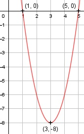

Aufgabe 3 f(x) = 2x2 - 12x + 10 f'(x) = 4x - 12, f''(x) = 4, f'''(x) = 0 Definitionsbereich: -∞ < x < ∞ Wertebereich: -8 ≤ f(x) < ∞ (siehe Extrempunkte) Asymptoten: - Symmetrie: - Nullstellen: 2x2 - 12x + 10 = 0 | :2 x2 - 6x + 5 = 0 p, q - Formel p = -6, q = 5 x1,2 = x1,2 = 3 ± x1,2 = 3 ± x1,2 = 3 ± 2 xx1 = 1 xx2 = 5 N1(1|0), N2(5|0) Schnittpunkt mit der y-Achse: f(0) = 2 * 02 - 12 * 0 + 10 Sy(0|10) Extrempunkte: 4x - 12 = 0 | +12 4x = 12 | :4 x = 3, f(3) = 2 * 32 - 12 * 3 + 10 = - 8 f''(x) = 2 > 0 --> Tiefpunkt (3|- 8) Alternativ: Scheitelpunktberechnung f(x) = 2x2 - 12x + 10 |:2 f(x) ---- = x2 - 6x + 5 2 f(x) ---- = (x - 3)2 - 9 + 5 | *2 2 f(x) = 2(x - 3)2 - 8 S(3|-8) Wendepunkte: 4 = 0 --> Widerspruch, keine Wendepunkte Graph:
